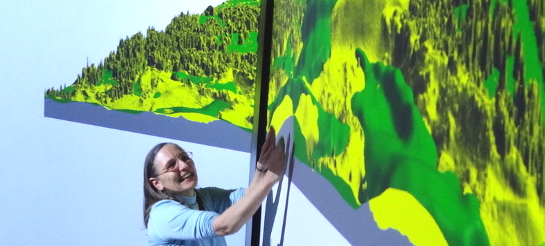

Thank You UCGIS

Helena Mitasova


Thank you Louis Iverson, and the great GRASS Team at USACE CERL
Erosion modeling at U of I and GRASS at CERL

Thank you Markus Neteler, GRASS GIS development team and open source geospatial community
Splines in 27 years: GRASS4.1 - GRASS7.8; contributions of 8+ developers

Thank you graduate students former and current
DEM time series visualization Jockey's Ridge dune

Thank you Mike Goodchild, John Wilson and Russ Harmon from ARO
Path sampling of continuous fields


Thank You CGA: Hugh Devine, Ross Meentemeyer, Anna and Vashek Petras